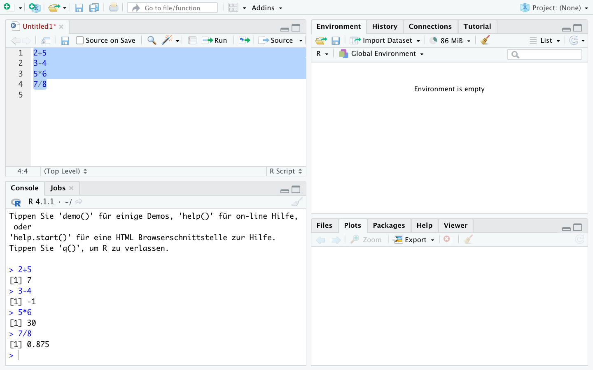

2+5[1] 73-4[1] -15*6[1] 307/8[1] 0.875R is a completely free program that you can download from CRAN. The RStudio extension is also free and can be downloaded here. RStudio enhances R by providing a significantly more informative and appealing interface, help, and auto-completion when writing syntax, as well as an overall improved user interface. However, RStudio is an extension of R, so you need both programs.
Install R first and then RStudio, so that RStudio recognizes the installed R version, and the two programs usually connect automatically. R is essentially the engine, and RStudio is our cockpit. We could work directly with R, but RStudio offers a more comfortable option and a better overview.

After successful installation, open the RStudio application  and you should see the following view:
and you should see the following view:
To avoid problems when working with R in the future, please disable the automatic saving and loading of the workspace. To do this, go to the appropriate menu under the “Tools -> Global options” tab, disable “Restore .RData into workspace at startup,” and set “Save workspace to .RData on exit:” to Never. Otherwise, RStudio will save all loaded objects when you end the session and automatically load them the next time you open the program, which can lead to problems.

Confirm the settings with “Apply” and close the window with “OK.”
After these basic settings, we can start with the first steps in R. To do this, first open a script by clicking on the white icon in the top left corner or pressing CTRL/Command + Shift + N simultaneously.

A fourth window opens, so you should now see the following view:
This script editor is where we will create and execute commands. The script editor serves as a collection of all commands to be executed. We can save these collections to revisit them later, and, more importantly, we can share command collections with others or use scripts from others for ourselves. So, we first draft a calculation in the script editor:

To execute it, click on the line to be executed so that the cursor is in that line, and then press CTRL and Enter simultaneously (Mac users: Command and Enter):
R outputs the results in the console below:
This also works for multiple calculations at once by selecting multiple lines and then pressing CTRL and Enter again (Mac users: Command and Enter):

Inputs from the script editor and results from the console will be presented like this in the future:
2+5[1] 73-4[1] -15*6[1] 307/8[1] 0.875Of course, R also handles longer calculations, such as following the order of operations:
2+3*2[1] 8(2+3)*2[1] 10Other operations are also possible:
4^2 ## 4²
sqrt(4) ## Square root
exp(1) ## Exponential function (Euler's number)
log(5) ## Natural logarithm
log(exp(5)) ## log and exp cancel each other outWe can create sequences of numbers using seq() or ::
2:6[1] 2 3 4 5 6seq(2,11,3)[1] 2 5 8 11So far, we have always displayed our calculations directly. For more extensive calculations—since we want to work with datasets starting in the next chapter—we want to save the intermediate steps.
Results can be saved as objects under any name using <-. R will then not display the result but will repeat the command in the console:
x <- 4/2In the “Environment” window at the top right, you can now see the stored object x:

We can retrieve it later:
x[1] 2Additionally, we can use objects in calculations—we simply use x and create, for example, y:
y <- x * 5
y[1] 10
With c(), we can store multiple values under one object, and these can also be used in calculations:
x1 <- c(1,2,3)
x1[1] 1 2 3x1* 2[1] 2 4 6With length(), we can check the number of stored values:
length(x1)[1] 3y1 <- c(10,11,9)
y1[1] 10 11 9y1/x1[1] 10.0 5.5 3.0ls() lists all existing objects, we can use the pattern = option to display only objects with a name that contains “1”:
ls()[1] "path" "x" "x1" "y" "y1" ls(pattern = "1")[1] "x1" "y1"Of course, we can also delete objects using rm(). If we try to call a non-existent object, we will get an error message:
rm(x1)
x1Error: Objekt 'x1' nicht gefundenWith rm(list = ls()), all objects can be removed from the environment.
We can save the script to call it again later.

It is important to give the saved file the extension “.R”, for example, “01_Script.R”.
# Heading 1 ----
## Section 1.1 ----
3+2*4
3+2*3
## Section 1.2 ----
3+2*sqrt(3)
# Heading 2 ----
x <- c(2,6,8,2,35)
y <- seq(2,10,2)
y/x
stud.prof.stud and prof.studprof and recall the object again!studs.profs.studs and profs. How would you do that?stud. How can you tell that it worked?
1.3.5 Comments
Besides the actual commands, comments are a central part of a data analysis syntax. This allows future users (especially ourselves in 3 weeks or 2 years) to understand what is happening. Comments in R can be added with
#:Tip: It’s best to create a folder right away where you can store all R scripts and datasets from this course.